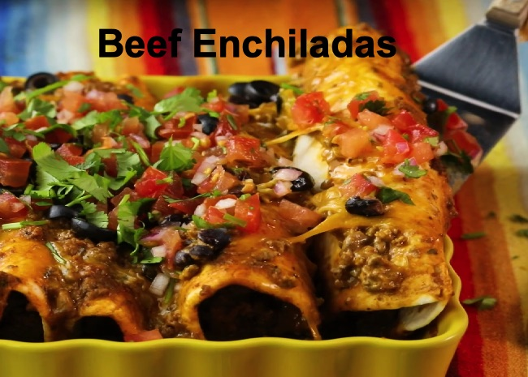

These enchiladas are absolutely amazing! Truly a recipe your family will love.
Ingregients
- 2 pounds ground beef
- ¼ onion, finely chopped
- 1 cup shredded Cheddar cheese
- ½ cup sour cream
- 1 tablespoon dried parsley
- 1 tablespoon taco seasoning
- 1 teaspoon dried oregano
- ½ teaspoon ground black pepper
- 2 ½ cups enchilada sauce
- 1 ½ teaspoons chili powder
- 1 clove garlic, minced
- ½ teaspoon salt
- 8 flour tortillas
- 1 (15 ounce) can black beans, rinsed and drained
- 1 (4 ounce) can sliced black olives, drained
- ¼ cup shredded Cheddar cheese
Directions
- Preheat oven to 350 degrees F (175 degrees C). Cook and stir ground beef with onion in a skillet over medium heat
until meat is crumbly and no longer pink, about 10 minutes. Drain grease. Stir 1 cup Cheddar cheese, sour cream,
parsley, taco seasoning, oregano, and black pepper into the ground beef until cheese has melted. Mix in enchilada sauce,
chili powder, garlic, and salt; bring to a simmer, reduce heat to low, and simmer until meat sauce is slightly thickened, about 5 minutes.
- Lay a tortilla onto a work surface and spoon about 1/4 cup of meat sauce down the center of the tortilla. Top meat sauce
with 1 tablespoon black beans and a sprinkling of black olives. Roll the tortilla up, enclosing the filling,
and lay seam-side down into a 9x13-inch baking dish. Repeat with remaining tortillas. Spoon any remaining meat sauce over
the enchiladas and scatter any remaining black beans and black olives over the top. Sprinkle tortillas with 1/4 cup Cheddar cheese.
- Bake in the preheated oven until cheese topping is melted and enchiladas and sauce are bubbling, 20 to 22 minutes. Let stand 5 minutes before serving.
- Prep: 25 mins
- Cook: 20 mins
- Total: 45 mins
- Yield: 6 servings
Nutrition Facts
Per Serving: 583 calories; protein 33g; carbohydrates 46.1g; fat 29.2g;
cholesterol 93.7mg; sodium 1216.3mg.
Top↑
←Back